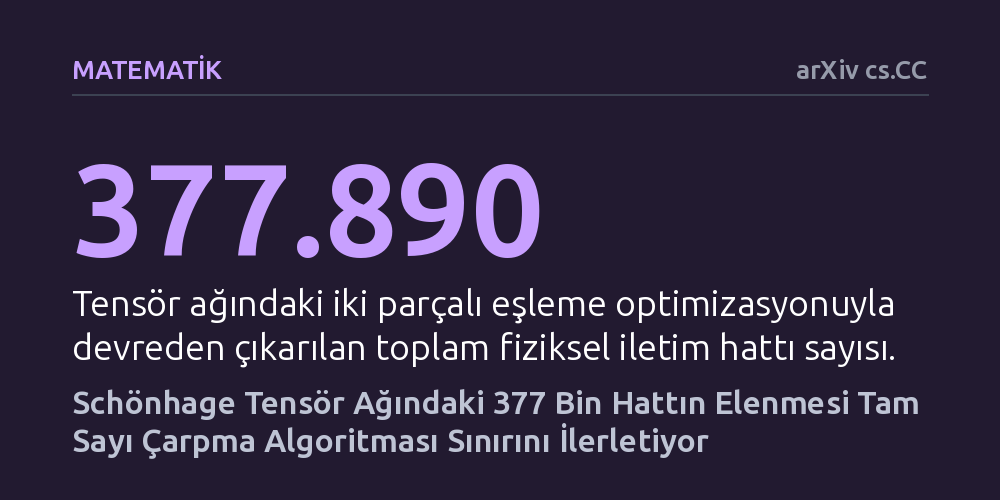

MATEMATIK · arXiv cs.CC · 2026-10-15
Araştırmacılar, büyük tam sayıların çarpımını hızlandırmayı amaçlayan Schönhage tensör yapısındaki gereksiz taşıyıcı bağlantıları eşleme algoritmalarıyla taradı. Ağdan 377 binden fazla iletim hattını ayıklayarak kuramsal zaman karmaşıklığı üssünü rekor seviye olan yaklaşık 4,13 × 10⁻⁵ değerine geliştirdiler.
Bilgisayar biliminin en temel işlemlerinden biri olan büyük sayıları çarpmanın kuramsal hız sınırının daha verimli ağ tasarımlarıyla aşılabileceğini ve bu kazanımların bilgisayarla sıfır hata payıyla doğrulanabileceğini gösterir.

İki büyük tam sayıyı birbiriyle çarpmak, ilkokulda öğrendiğimiz alt alta yazıp basamak basamak toplama yönteminden bu yana bilgisayar biliminin en temel yapı taşlarından biridir. Basit okul yöntemi basamak sayısının karesi kadar işlem gerektirirken, 1971 yılında Arnold Schönhage ve Volker Strassen geliştirdikleri yöntemle bu süreyi basamak sayısının logaritmasıyla orantılı bir düzeye indirdi. Uzun yıllar boyunca basamak sayısına bağlı bu sınır aşılamaz bir duvar olarak kabul edildi; zira iki devasa sayıyı çarpmak için gereken kuramsal asgari işlem miktarının bu sınırın altına inip inemeyeceği belirsizliğini koruyordu.
Bu çalışma, son dönemde ortaya atılan ve söz konusu sınırın kırılabileceğini öne süren kuramsal çerçevenin üzerine inşa ediliyor. Araştırmacıların cevap aradığı temel soru şudur: Schönhage'nin çok hatlı tensör ayrışımı yapısındaki taşıyıcı ağlar daha verimli bir şekilde eşleştirilerek, kuramsal çarpma hızını belirleyen matematiksel katsayı daha da iyileştirilebilir mi? Başka bir ifadeyle, mevcut matematiksel iskeletin içinde henüz fark edilmemiş fazlalıklar var mıdır ve bunlar temizlendiğinde hesaplama maliyeti ne kadar düşürülebilir?
Yazarlar bu soruyu yanıtlamak için Schönhage tensör ayrışımını temsil eden iki parçalı çizge yapılarını mercek altına aldı. İki parçalı çizgeler, birbirine bağlı iki farklı bileşen kümesi arasındaki veri akışını gösteren ağ modelleridir. Araştırmacılar, 23 ve 25 boyutlu modellerde ardışık artırıcı yolları tarayan birleştirici bir arama algoritması kurgulayarak ağ içindeki veri taşıyıcı bağlantılarını optimize etti. Bu yaklaşım, ağın genel işleyişini aksatmadan devreden çıkarılabilecek düğümleri ve bağlantı yollarını tespit etmeye odaklandı.
Arama sonucunda bulunan sadeleştirmenin matematiksel geçerliliği son derece sıkı denetimlerden geçirildi. Hesaplamalar sırasında olası yuvarlama hatalarını tamamen engellemek amacıyla yaklaşık ondalıklı sayılar yerine sıfır kayan nokta hatası sunan tam kesirli rasyonel aritmetik kullanıldı. Yapılan optimizasyonun sistemin kurallarını bozmadığını garanti etmek için 47 polinom kısıtı ve 7 rasyonel güvenlik payı teker teker denetlendi. Dahası, temel hat azaltma özdeşliği, matematiksel kanıtları mantık kurallarıyla harfiyen sınayan Lean 4 teorem kanıtlayıcı yazılımında kanıtlanmamış hiçbir aksiyom kullanılmadan biçimsel olarak doğrulandı.
Ağ üzerinde yürütülen arama süreci, birbiri ardına tetiklenen bir düğüm çözülme zincirini ortaya çıkardı. Bu zincirleme etki sayesinde 23 boyutlu tensörden 95, 25 boyutlu tensörden ise 90 olmak üzere toplam 185 taşıyıcı rol tamamen ortadan kaldırıldı. Bu rollerin elenmesi, devasa hesaplama ağındaki küresel fiziksel iletim hattı sayısını 177.284.805 seviyesinden 176.906.915 değerine düşürdü. Böylece ağ yapısından tek seferde 377.890 adet iletim hattı ayıklanmış oldu.
Ortadan kaldırılan bu hatlar, algoritmanın asimptotik çalışma süresini belirleyen katsayının doğrudan iyileşmesini sağladı. Kesirli ızgara üzerinde yapılan hassas değerlendirme sonucunda, zaman karmaşıklığı üssü yaklaşık 4,131 × 10⁻⁵ değerine ulaştı. Bu sonuç, aynı tensör mimarisi üzerinde daha önce elde edilmiş olan 4,124 × 10⁻⁵ seviyesindeki rekoru geride bırakarak kuramsal zaman sınırını daha keskin bir noktaya taşıdı.
Elde edilen bu matematiksel ilerlemenin ne anlama geldiğini doğru kavramak için çalışmanın sınırlarını net çizmek gerekir. Buradaki hız artışı, günlük hayatta kullandığımız bilgisayarların veya cep telefonlarının hesaplama hızını birdenbire artıracak pratik bir yazılım güncellemesi değildir. Bahsedilen iyileştirme, basamak sayısı astronomik boyutlara ulaşan devasa sayılar için geçerli olan ve yalnızca kuramsal bilgisayar bilimini ilgilendiren soyut bir kazançtır.
Daha da önemlisi, bu çalışmanın dayandığı temel çerçevenin kendisi de henüz bilim dünyasında tam olarak doğrulanmamış bir önbaskıya dayanmaktadır. Dolayısıyla yazarların elde ettiği rekor, söz konusu temel çerçevenin doğruluğu koşuluna bağlıdır. Çalışma, soyut matematiksel yapılardaki fazlalıkların sistematik algoritmalarla elenebileceğini ve bu kanıtların bilgisayarla doğrulanabileceğini göstermesi açısından sağlam bir adım olsa da, çarpma kuramının nihai cevabı niteliğinde değildir.